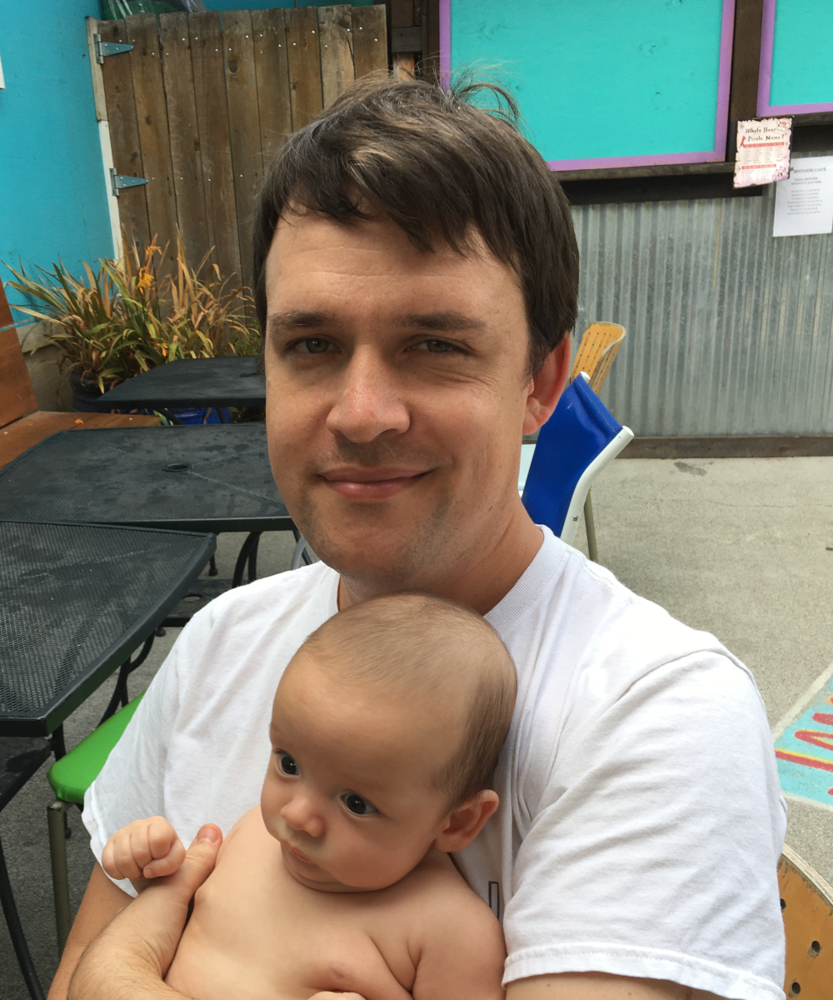

Sam Potter

Hello! I’m a PhD student in the Department of Computer Science at the University of Maryland, College Park, advised by Masha Cameron (MATH) and Ramani Duraiswami (CS). In 2019, I received an MS in electrical engineering, also from the University of Maryland. I originally obtained a BS in mathematics from the University of Washington in Seattle.
Currently, I’m also employed as a research assistant at the Planetary Science Institute, working with Norbert Schörghofer (PSI) and Erwan Mazarico (NASA).
My research interests lie in scientific computing and numerical analysis, with a focus on fast algorithms and direct solvers for high-frequency wave propagation, with applications in acoustics, stochastic differential equations, and planetary science.
Here’s an up-to-date research statement and CV.
🔥 I have accepted a position as a Courant Instructor at NYU starting in Sep 2021.
{kind=link}
{kind=link}
{kind=link}
{kind=link}
Software
Libraries and applications that I’ve written can be found on Github. Some select projects include:
-
jmm: a C99 library with Python bindings implementing the jet marching method for solving the eikonal equation.
-
nufft: a high-performance 1D nonuniform fast Fourier transform (FFT), based on the fast multipole method for the Hilbert kernel and written in C++.
-
olim: a high-performance implementation of the ordered line integral method for the eikonal equation in 2D and 3D, written in C++.
-
python-embree: a thin Embree 3 wrapper, written in Cython. The focus is on easy interoperability with numpy and compatibility with the Embree C API.
-
python-flux: a fast boundary element method for thermal and illumination modeling, written in Python. Intended for use on rough planetary surfaces.
Talks
-
🔥 Jet marching methods for numerical geometric acoustics, Joint Mathematics Meeting, SIAM Minisymposium on New Frontiers in Computational Mathematics, Jan 2021. [abstract, video, slides]
-
🔥 Jet marching methods for solving the eikonal equation, Sayas Numerics Seminar, Dec 2020. [abstract, video, slides]
-
Computing the quasipotential for nongradient SDEs in 3D, Mid-Atlantic Numerical Analysis Day 2019, Philadelphia. [slides]
-
Computing the quasipotential for nongradient SDEs in 3D, SciCADE 2019, Innsbruck. [slides]
-
Ordered line integral methods for solving the eikonal equation, ICIAM 2019, Valencia. [slides]
Papers
-
Samuel F Potter, Maria K Cameron. Jet marching methods for solving the eikonal equation, submitted. [arXiv]
-
Samuel F Potter, Maria K Cameron. Ordered line integral methods for solving the eikonal equation, Journal of Scientific Computing, 2019. [JOMP], [arXiv]
-
Shuo Yang, Samuel F Potter, Maria K Cameron. Computing the quasipotential for nongradient SDEs in 3D, Journal of Computational Physics, 2019. [JCP], [arXiv]
-
Samuel F Potter, Ramani Duraiswami. Fast and stable Pascal matrix algorithms, preprint, 2017. [arXiv]
-
Samuel F Potter, Nail A Gumerov, Ramani Duraiswami. Fast interpolation of bandlimited functions, ICASSP, 2017. [pdf]
Posters
-
Samuel F Potter, Norbert Schörghofer, Erwan Mazarico. A Fast Radiosity Method for Thermal Modeling on Rough Planetary Surfaces, American Geophysical Union Fall Meeting, 2020.
-
Samuel F Potter, Norbert Schörghofer, Erwan Mazarico. Large-scale Thermal Modeling at the Lunar South Pole, NASA Exploration Science Forum, 2020. [web]
-
Samuel F Potter, Norbert Schörghofer, Erwan Mazarico. Illumination and Temperature on Rough Terrain: Fast Methods for Solving the Radiosity Equation, American Geophysical Union Fall Meeting, 2019. [pdf]
-
Samuel F Potter, Dijkstra-like Algorithms for High-Frequency Approximations of the Helmholtz Equation, Computer and Computational Sciences Research Day, 2019. [pdf]
-
Erwan Mazarico, Samuel F Potter, Michael K Barker, Norbert Schörghofer. Illumination and Thermal Conditions on Small and Airless Bodies, Lunar and Planetary Science Conference, 2019. [pdf]
-
Samuel F Potter, Erwan Mazarico. Illumination and Thermal Environment at (4) Vesta and (1) Ceres, American Geophysical Union Fall Meeting, 2018. [pdf]
-
Samuel F Potter, Nail A Gumerov, Ramani Duraiswami, Fast interpolation of bandlimited functions, ICASSP, 2017. [pdf]
-
Samuel F Potter, Nail A Gumerov, Ramani Duraiswami, Fast interpolation of periodic bandlimited nonuniform data. February Fourier Talks, 2016.
-
Vernon Oiloom Chan, Lara Clemens, Sam Potter, Wai Ming Tai, Robust low-rank matrix factorization. Joint Mathematics Meetings, 2013.
Work Experience & Internships
-
🔥 I will be doing a research internship with Dr. Tim Langlois at Adobe Research during summer 2021.
-
During the summer of 2020, I did an internship at Microsoft Research in the Interactive Media Group, where I was mentored by Drs. John Snyder and Nikunj Raghuvanshi.
-
During the summer of 2018, I did an internship at NASA Goddard Space Flight Center in the Planetary Geology, Geophysics, and Geochemistry Laboratory, supervised by Dr. Erwan Mazarico.
-
Before going back to school, I was a software engineer on the rendering team at Vectorworks, Inc. in Columbia, MD.
-
Before moving to Maryland, I worked as a software engineer at Vectorform, LLC in Seattle, WA.
-
During the summer of 2013, I participated in IPAM RIPS Hong Kong at HKUST. Our team’s industrial mentor was Microsoft Research Asia.